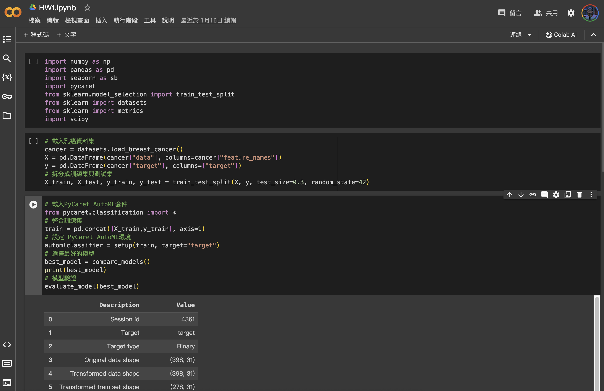
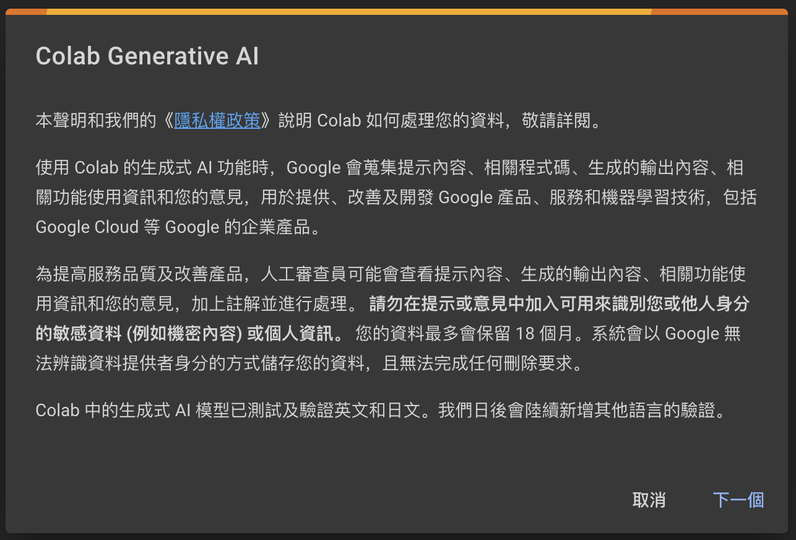
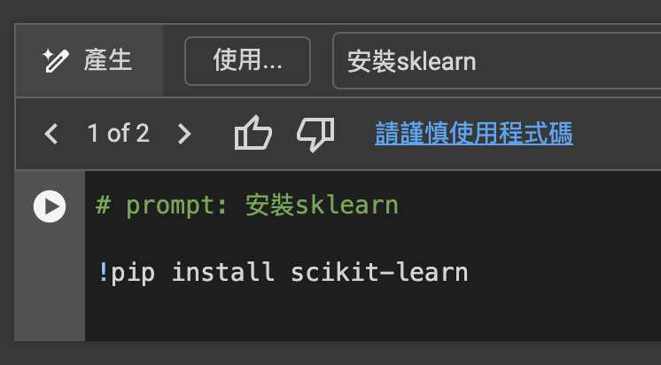
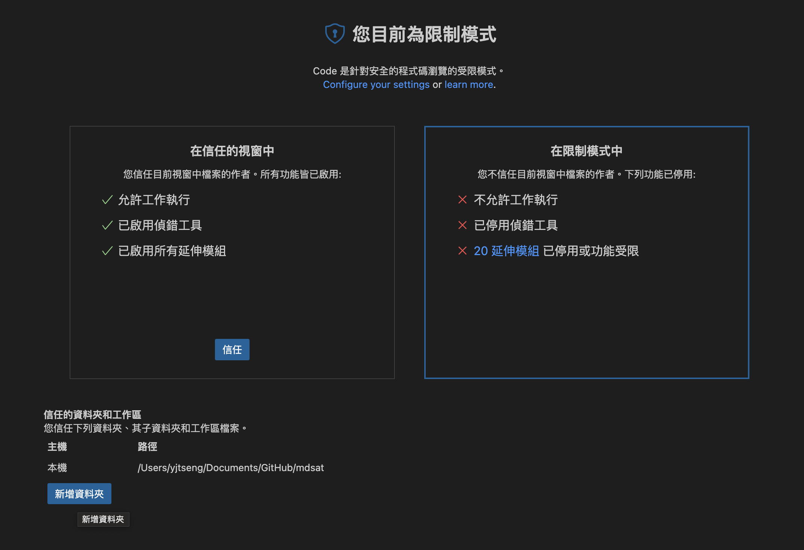

1. Environment Setting
Basic Setup
Python vs. Python IDE
Python: 程式核心 (引擎) 
Python vs. Python IDE
Python IDE: 操作介面 IDE (儀錶板)，如VSCode、PyCharm

plot of chunk unnamed-chunk-2
Work in the Cloud
- If you are not familiar with Python and python IDE, and are able to work in the cloud. I recommend you to use Google Colab with Jupyter notebook.
- Jupyter notebook is a really good python interface for data analysis.
- Check the document for more information
Google Colab Interface
Google Colab Step by Step
Google “Colab”
Click the first link with “Google Colab” and from Google
Click “新增筆記本”
Google Colab Markdown
File name
Code
Text
AI!
Google Generative AI


Google Colab Hands-on
- 打開Google Colab
- 新增一個筆記本
- 新增一個程式碼區塊（如果沒有的話）
- 在程式碼區塊輸入1+，按左手邊的執行按鈕（Play）
- 觀察結果
Libraries
Python and Python Library (Packages)
Python: 程式核心 (iPhone)

plot of chunk unnamed-chunk-4
Python and Python Library (Packages)
Python Library: 附加程式 (APP)

Python = Base + Other Libraries
Install Libraries
!pip3installpackage names
- Google Colab has multiple build-in packages, you can check in the notebook
Package Version Location Installer
---------------------------------- -------------------- ------------------------------------------------------------------- ---------
agate 1.12.0 c:\users\yjtseng\anaconda3\lib\site-packages pip
agate-dbf 0.2.3 c:\users\yjtseng\anaconda3\lib\site-packages pip
agate-excel 0.4.1 c:\users\yjtseng\anaconda3\lib\site-packages pip
agate-sql 0.7.2 c:\users\yjtseng\anaconda3\lib\site-packages pip
alabaster 0.7.12 c:\users\yjtseng\anaconda3\lib\site-packages conda
anaconda-client 1.9.0 c:\users\yjtseng\anaconda3\lib\site-packages conda
anaconda-navigator 2.1.1 c:\users\yjtseng\anaconda3\lib\site-packages
anaconda-project 0.10.1 c:\users\yjtseng\anaconda3\lib\site-packages conda
anyio 2.2.0 c:\users\yjtseng\anaconda3\lib\site-packages conda
appdirs 1.4.4 c:\users\yjtseng\anaconda3\lib\site-packages
argh 0.26.2 c:\users\yjtseng\anaconda3\lib\site-packages
argon2-cffi 20.1.0 c:\users\yjtseng\anaconda3\lib\site-packages conda
arrow 0.13.1 c:\users\yjtseng\anaconda3\lib\site-packages conda
asn1crypto 1.4.0 c:\users\yjtseng\anaconda3\lib\site-packages conda
astroid 2.6.6 c:\users\yjtseng\anaconda3\lib\site-packages conda
astropy 4.3.1 c:\users\yjtseng\anaconda3\lib\site-packages conda
async-generator 1.10 c:\users\yjtseng\anaconda3\lib\site-packages conda
atomicwrites 1.4.0 c:\users\yjtseng\anaconda3\lib\site-packages conda
attrs 21.2.0 c:\users\yjtseng\anaconda3\lib\site-packages conda
autopep8 1.5.7 c:\users\yjtseng\anaconda3\lib\site-packages conda
Babel 2.9.1 c:\users\yjtseng\anaconda3\lib\site-packages conda
backcall 0.2.0 c:\users\yjtseng\anaconda3\lib\site-packages conda
backports.functools-lru-cache 1.6.4 c:\users\yjtseng\anaconda3\lib\site-packages conda
backports.shutil-get-terminal-size 1.0.0 c:\users\yjtseng\anaconda3\lib\site-packages conda
backports.tempfile 1.0 c:\users\yjtseng\anaconda3\lib\site-packages conda
backports.weakref 1.0.post1 c:\users\yjtseng\anaconda3\lib\site-packages
bcrypt 3.2.0 c:\users\yjtseng\anaconda3\lib\site-packages conda
beautifulsoup4 4.10.0 c:\users\yjtseng\anaconda3\lib\site-packages conda
binaryornot 0.4.4 c:\users\yjtseng\anaconda3\lib\site-packages conda
bitarray 2.3.0 c:\users\yjtseng\anaconda3\lib\site-packages conda
bkcharts 0.2 c:\users\yjtseng\anaconda3\lib\site-packages
black 19.10b0 c:\users\yjtseng\anaconda3\lib\site-packages conda
bleach 4.0.0 c:\users\yjtseng\anaconda3\lib\site-packages conda
bokeh 2.4.1 c:\users\yjtseng\anaconda3\lib\site-packages conda
boto 2.49.0 c:\users\yjtseng\anaconda3\lib\site-packages
Bottleneck 1.3.2 c:\users\yjtseng\anaconda3\lib\site-packages conda
brotlipy 0.7.0 c:\users\yjtseng\anaconda3\lib\site-packages
cached-property 1.5.2 c:\users\yjtseng\anaconda3\lib\site-packages conda
certifi 2021.10.8 c:\users\yjtseng\anaconda3\lib\site-packages
cffi 1.14.6 c:\users\yjtseng\anaconda3\lib\site-packages conda
chardet 4.0.0 c:\users\yjtseng\anaconda3\lib\site-packages conda
charset-normalizer 2.0.4 c:\users\yjtseng\anaconda3\lib\site-packages conda
click 8.0.3 c:\users\yjtseng\anaconda3\lib\site-packages
cloudpickle 2.0.0 c:\users\yjtseng\anaconda3\lib\site-packages conda
clyent 1.2.2 c:\users\yjtseng\anaconda3\lib\site-packages
colorama 0.4.4 c:\users\yjtseng\anaconda3\lib\site-packages conda
comtypes 1.1.10 c:\users\yjtseng\anaconda3\lib\site-packages
conda 4.11.0 c:\users\yjtseng\anaconda3\lib\site-packages
conda-build 3.21.6 c:\users\yjtseng\anaconda3\lib\site-packages
conda-content-trust 0+unknown c:\users\yjtseng\anaconda3\lib\site-packages conda
conda-pack 0.6.0 c:\users\yjtseng\anaconda3\lib\site-packages conda
conda-package-handling 1.7.3 c:\users\yjtseng\anaconda3\lib\site-packages conda
conda-repo-cli 1.0.4 c:\users\yjtseng\anaconda3\lib\site-packages conda
conda-token 0.3.0 c:\users\yjtseng\anaconda3\lib\site-packages conda
conda-verify 3.4.2 c:\users\yjtseng\anaconda3\lib\site-packages conda
contextlib2 0.6.0.post1 c:\users\yjtseng\anaconda3\lib\site-packages conda
cookiecutter 1.7.2 c:\users\yjtseng\anaconda3\lib\site-packages conda
cryptography 3.4.8 c:\users\yjtseng\anaconda3\lib\site-packages conda
csvkit 2.0.1 c:\users\yjtseng\anaconda3\lib\site-packages pip
cycler 0.10.0 c:\users\yjtseng\anaconda3\lib\site-packages
Cython 0.29.24 c:\users\yjtseng\anaconda3\lib\site-packages conda
cytoolz 0.11.0 c:\users\yjtseng\anaconda3\lib\site-packages
daal4py 2021.3.0 c:\users\yjtseng\anaconda3\lib\site-packages
dask 2021.10.0 c:\users\yjtseng\anaconda3\lib\site-packages
dbfread 2.0.7 c:\users\yjtseng\anaconda3\lib\site-packages pip
debugpy 1.4.1 c:\users\yjtseng\anaconda3\lib\site-packages conda
decorator 5.1.0 c:\users\yjtseng\anaconda3\lib\site-packages conda
defusedxml 0.7.1 c:\users\yjtseng\anaconda3\lib\site-packages conda
diff-match-patch 20200713 c:\users\yjtseng\anaconda3\lib\site-packages conda
distributed 2021.10.0 c:\users\yjtseng\anaconda3\lib\site-packages conda
docutils 0.17.1 c:\users\yjtseng\anaconda3\lib\site-packages conda
entrypoints 0.3 c:\users\yjtseng\anaconda3\lib\site-packages
et-xmlfile 1.1.0 c:\users\yjtseng\anaconda3\lib\site-packages
fastcache 1.1.0 c:\users\yjtseng\anaconda3\lib\site-packages conda
filelock 3.3.1 c:\users\yjtseng\anaconda3\lib\site-packages conda
flake8 3.9.2 c:\users\yjtseng\anaconda3\lib\site-packages conda
Flask 1.1.2 c:\users\yjtseng\anaconda3\lib\site-packages conda
fonttools 4.25.0 c:\users\yjtseng\anaconda3\lib\site-packages
fsspec 2021.10.1 c:\users\yjtseng\anaconda3\lib\site-packages conda
future 0.18.2 c:\users\yjtseng\anaconda3\lib\site-packages conda
gevent 21.8.0 c:\users\yjtseng\anaconda3\lib\site-packages conda
glob2 0.7 c:\users\yjtseng\anaconda3\lib\site-packages conda
greenlet 1.1.1 c:\users\yjtseng\anaconda3\lib\site-packages conda
h5py 3.2.1 c:\users\yjtseng\anaconda3\lib\site-packages conda
HeapDict 1.0.1 c:\users\yjtseng\anaconda3\lib\site-packages conda
html5lib 1.1 c:\users\yjtseng\anaconda3\lib\site-packages conda
idna 3.2 c:\users\yjtseng\anaconda3\lib\site-packages conda
imagecodecs 2021.8.26 c:\users\yjtseng\anaconda3\lib\site-packages conda
imageio 2.9.0 c:\users\yjtseng\anaconda3\lib\site-packages conda
imagesize 1.2.0 c:\users\yjtseng\anaconda3\lib\site-packages conda
importlib-metadata 4.8.1 c:\users\yjtseng\anaconda3\lib\site-packages conda
inflection 0.5.1 c:\users\yjtseng\anaconda3\lib\site-packages
iniconfig 1.1.1 c:\users\yjtseng\anaconda3\lib\site-packages conda
intervaltree 3.1.0 c:\users\yjtseng\anaconda3\lib\site-packages conda
ipykernel 6.4.1 c:\users\yjtseng\anaconda3\lib\site-packages conda
ipython 7.29.0 c:\users\yjtseng\anaconda3\lib\site-packages conda
ipython-genutils 0.2.0 c:\users\yjtseng\anaconda3\lib\site-packages conda
ipywidgets 7.6.5 c:\users\yjtseng\anaconda3\lib\site-packages conda
isodate 0.6.1 c:\users\yjtseng\anaconda3\lib\site-packages pip
isort 5.9.3 c:\users\yjtseng\anaconda3\lib\site-packages conda
itsdangerous 2.0.1 c:\users\yjtseng\anaconda3\lib\site-packages conda
jdcal 1.4.1 c:\users\yjtseng\anaconda3\lib\site-packages conda
jedi 0.18.0 c:\users\yjtseng\anaconda3\lib\site-packages conda
Jinja2 2.11.3 c:\users\yjtseng\anaconda3\lib\site-packages conda
jinja2-time 0.2.0 c:\users\yjtseng\anaconda3\lib\site-packages conda
joblib 1.1.0 c:\users\yjtseng\anaconda3\lib\site-packages conda
json5 0.9.6 c:\users\yjtseng\anaconda3\lib\site-packages conda
jsonschema 3.2.0 c:\users\yjtseng\anaconda3\lib\site-packages conda
jupyter 1.0.0 c:\users\yjtseng\anaconda3\lib\site-packages conda
jupyter-client 6.1.12 c:\users\yjtseng\anaconda3\lib\site-packages conda
jupyter-console 6.4.0 c:\users\yjtseng\anaconda3\lib\site-packages conda
jupyter-core 4.8.1 c:\users\yjtseng\anaconda3\lib\site-packages conda
jupyter-server 1.4.1 c:\users\yjtseng\anaconda3\lib\site-packages conda
jupyterlab 3.2.1 c:\users\yjtseng\anaconda3\lib\site-packages conda
jupyterlab-pygments 0.1.2 c:\users\yjtseng\anaconda3\lib\site-packages conda
jupyterlab-server 2.8.2 c:\users\yjtseng\anaconda3\lib\site-packages conda
jupyterlab-widgets 1.0.0 c:\users\yjtseng\anaconda3\lib\site-packages conda
keyring 23.1.0 c:\users\yjtseng\anaconda3\lib\site-packages conda
kiwisolver 1.3.1 c:\users\yjtseng\anaconda3\lib\site-packages conda
lazy-object-proxy 1.6.0 c:\users\yjtseng\anaconda3\lib\site-packages conda
leather 0.4.0 c:\users\yjtseng\anaconda3\lib\site-packages pip
libarchive-c 2.9 c:\users\yjtseng\anaconda3\lib\site-packages conda
llvmlite 0.37.0 c:\users\yjtseng\anaconda3\lib\site-packages
locket 0.2.1 c:\users\yjtseng\anaconda3\lib\site-packages\locket-0.2.1-py3.9.egg
lxml 4.6.3 c:\users\yjtseng\anaconda3\lib\site-packages conda
MarkupSafe 1.1.1 c:\users\yjtseng\anaconda3\lib\site-packages conda
matplotlib 3.4.3 c:\users\yjtseng\anaconda3\lib\site-packages conda
matplotlib-inline 0.1.2 c:\users\yjtseng\anaconda3\lib\site-packages conda
mccabe 0.6.1 c:\users\yjtseng\anaconda3\lib\site-packages
menuinst 1.4.18 c:\users\yjtseng\anaconda3\lib\site-packages conda
mistune 0.8.4 c:\users\yjtseng\anaconda3\lib\site-packages conda
mkl-fft 1.3.1 c:\users\yjtseng\anaconda3\lib\site-packages
mkl-random 1.2.2 c:\users\yjtseng\anaconda3\lib\site-packages conda
mkl-service 2.4.0 c:\users\yjtseng\anaconda3\lib\site-packages
mock 4.0.3 c:\users\yjtseng\anaconda3\lib\site-packages conda
more-itertools 8.10.0 c:\users\yjtseng\anaconda3\lib\site-packages conda
mpmath 1.2.1 c:\users\yjtseng\anaconda3\lib\site-packages
msgpack 1.0.2 c:\users\yjtseng\anaconda3\lib\site-packages conda
multipledispatch 0.6.0 c:\users\yjtseng\anaconda3\lib\site-packages conda
munkres 1.1.4 c:\users\yjtseng\anaconda3\lib\site-packages
mypy-extensions 0.4.3 c:\users\yjtseng\anaconda3\lib\site-packages
navigator-updater 0.2.1 c:\users\yjtseng\anaconda3\lib\site-packages
nbclassic 0.2.6 c:\users\yjtseng\anaconda3\lib\site-packages conda
nbclient 0.5.3 c:\users\yjtseng\anaconda3\lib\site-packages conda
nbconvert 6.1.0 c:\users\yjtseng\anaconda3\lib\site-packages conda
nbformat 5.1.3 c:\users\yjtseng\anaconda3\lib\site-packages conda
nest-asyncio 1.5.1 c:\users\yjtseng\anaconda3\lib\site-packages conda
networkx 2.6.3 c:\users\yjtseng\anaconda3\lib\site-packages conda
nltk 3.6.5 c:\users\yjtseng\anaconda3\lib\site-packages
nose 1.3.7 c:\users\yjtseng\anaconda3\lib\site-packages conda
notebook 6.4.5 c:\users\yjtseng\anaconda3\lib\site-packages conda
numba 0.54.1 c:\users\yjtseng\anaconda3\lib\site-packages conda
numexpr 2.7.3 c:\users\yjtseng\anaconda3\lib\site-packages conda
numpy 1.20.3 c:\users\yjtseng\anaconda3\lib\site-packages conda
numpydoc 1.1.0 c:\users\yjtseng\anaconda3\lib\site-packages conda
olefile 0.46 c:\users\yjtseng\anaconda3\lib\site-packages conda
openpyxl 3.0.9 c:\users\yjtseng\anaconda3\lib\site-packages conda
packaging 21.0 c:\users\yjtseng\anaconda3\lib\site-packages conda
pandas 1.3.4 c:\users\yjtseng\anaconda3\lib\site-packages conda
pandocfilters 1.4.3 c:\users\yjtseng\anaconda3\lib\site-packages conda
paramiko 2.7.2 c:\users\yjtseng\anaconda3\lib\site-packages conda
parsedatetime 2.6 c:\users\yjtseng\anaconda3\lib\site-packages pip
parso 0.8.2 c:\users\yjtseng\anaconda3\lib\site-packages conda
partd 1.2.0 c:\users\yjtseng\anaconda3\lib\site-packages conda
path 16.0.0 c:\users\yjtseng\anaconda3\lib\site-packages conda
pathlib2 2.3.6 c:\users\yjtseng\anaconda3\lib\site-packages conda
pathspec 0.7.0 c:\users\yjtseng\anaconda3\lib\site-packages conda
patsy 0.5.2 c:\users\yjtseng\anaconda3\lib\site-packages
pep8 1.7.1 c:\users\yjtseng\anaconda3\lib\site-packages
pexpect 4.8.0 c:\users\yjtseng\anaconda3\lib\site-packages conda
pickleshare 0.7.5 c:\users\yjtseng\anaconda3\lib\site-packages conda
Pillow 8.4.0 c:\users\yjtseng\anaconda3\lib\site-packages
pip 21.3.1 c:\users\yjtseng\anaconda3\lib\site-packages pip
pkginfo 1.7.1 c:\users\yjtseng\anaconda3\lib\site-packages
pluggy 0.13.1 c:\users\yjtseng\anaconda3\lib\site-packages conda
ply 3.11 c:\users\yjtseng\anaconda3\lib\site-packages
poyo 0.5.0 c:\users\yjtseng\anaconda3\lib\site-packages conda
prometheus-client 0.11.0 c:\users\yjtseng\anaconda3\lib\site-packages conda
prompt-toolkit 3.0.20 c:\users\yjtseng\anaconda3\lib\site-packages conda
psutil 5.8.0 c:\users\yjtseng\anaconda3\lib\site-packages conda
ptyprocess 0.7.0 c:\users\yjtseng\anaconda3\lib\site-packages conda
py 1.10.0 c:\users\yjtseng\anaconda3\lib\site-packages conda
pycodestyle 2.7.0 c:\users\yjtseng\anaconda3\lib\site-packages conda
pycosat 0.6.3 c:\users\yjtseng\anaconda3\lib\site-packages
pycparser 2.20 c:\users\yjtseng\anaconda3\lib\site-packages conda
pycurl 7.44.1 c:\users\yjtseng\anaconda3\lib\site-packages
pydocstyle 6.1.1 c:\users\yjtseng\anaconda3\lib\site-packages conda
pyerfa 2.0.0 c:\users\yjtseng\anaconda3\lib\site-packages conda
pyflakes 2.3.1 c:\users\yjtseng\anaconda3\lib\site-packages conda
Pygments 2.10.0 c:\users\yjtseng\anaconda3\lib\site-packages conda
PyJWT 2.1.0 c:\users\yjtseng\anaconda3\lib\site-packages conda
pylint 2.9.6 c:\users\yjtseng\anaconda3\lib\site-packages conda
pyls-spyder 0.4.0 c:\users\yjtseng\anaconda3\lib\site-packages
PyNaCl 1.4.0 c:\users\yjtseng\anaconda3\lib\site-packages conda
pyodbc 4.0.0-unsupported c:\users\yjtseng\anaconda3\lib\site-packages
pyOpenSSL 21.0.0 c:\users\yjtseng\anaconda3\lib\site-packages conda
pyparsing 3.0.4 c:\users\yjtseng\anaconda3\lib\site-packages conda
pyreadline 2.1 c:\users\yjtseng\anaconda3\lib\site-packages
pyrsistent 0.18.0 c:\users\yjtseng\anaconda3\lib\site-packages conda
PySocks 1.7.1 c:\users\yjtseng\anaconda3\lib\site-packages conda
pytest 6.2.4 c:\users\yjtseng\anaconda3\lib\site-packages
python-dateutil 2.8.2 c:\users\yjtseng\anaconda3\lib\site-packages conda
python-lsp-black 1.0.0 c:\users\yjtseng\anaconda3\lib\site-packages conda
python-lsp-jsonrpc 1.0.0 c:\users\yjtseng\anaconda3\lib\site-packages
python-lsp-server 1.2.4 c:\users\yjtseng\anaconda3\lib\site-packages
python-slugify 5.0.2 c:\users\yjtseng\anaconda3\lib\site-packages conda
pytimeparse 1.1.8 c:\users\yjtseng\anaconda3\lib\site-packages pip
pytz 2021.3 c:\users\yjtseng\anaconda3\lib\site-packages
PyWavelets 1.1.1 c:\users\yjtseng\anaconda3\lib\site-packages conda
pywin32 228 c:\users\yjtseng\anaconda3\lib\site-packages
pywin32-ctypes 0.2.0 c:\users\yjtseng\anaconda3\lib\site-packages conda
pywinpty 0.5.7 c:\users\yjtseng\anaconda3\lib\site-packages conda
PyYAML 6.0 c:\users\yjtseng\anaconda3\lib\site-packages
pyzmq 22.2.1 c:\users\yjtseng\anaconda3\lib\site-packages conda
QDarkStyle 3.0.2 c:\users\yjtseng\anaconda3\lib\site-packages conda
qstylizer 0.1.10 c:\users\yjtseng\anaconda3\lib\site-packages conda
QtAwesome 1.0.2 c:\users\yjtseng\anaconda3\lib\site-packages conda
qtconsole 5.1.1 c:\users\yjtseng\anaconda3\lib\site-packages conda
QtPy 1.10.0 c:\users\yjtseng\anaconda3\lib\site-packages conda
regex 2021.8.3 c:\users\yjtseng\anaconda3\lib\site-packages conda
requests 2.26.0 c:\users\yjtseng\anaconda3\lib\site-packages conda
rope 0.19.0 c:\users\yjtseng\anaconda3\lib\site-packages conda
Rtree 0.9.7 c:\users\yjtseng\anaconda3\lib\site-packages conda
ruamel-yaml-conda 0.15.100 c:\users\yjtseng\anaconda3\lib\site-packages conda
scikit-image 0.18.3 c:\users\yjtseng\anaconda3\lib\site-packages
scikit-learn 0.24.2 c:\users\yjtseng\anaconda3\lib\site-packages conda
scikit-learn-intelex 2021.20210714.120553 c:\users\yjtseng\anaconda3\lib\site-packages
scipy 1.7.1 c:\users\yjtseng\anaconda3\lib\site-packages conda
seaborn 0.11.2 c:\users\yjtseng\anaconda3\lib\site-packages conda
Send2Trash 1.8.0 c:\users\yjtseng\anaconda3\lib\site-packages conda
setuptools 58.0.4 c:\users\yjtseng\anaconda3\lib\site-packages
simplegeneric 0.8.1 c:\users\yjtseng\anaconda3\lib\site-packages
singledispatch 3.7.0 c:\users\yjtseng\anaconda3\lib\site-packages conda
sip 4.19.13 c:\users\yjtseng\anaconda3\lib\site-packages conda
six 1.16.0 c:\users\yjtseng\anaconda3\lib\site-packages conda
sniffio 1.2.0 c:\users\yjtseng\anaconda3\lib\site-packages conda
snowballstemmer 2.1.0 c:\users\yjtseng\anaconda3\lib\site-packages conda
sortedcollections 2.1.0 c:\users\yjtseng\anaconda3\lib\site-packages conda
sortedcontainers 2.4.0 c:\users\yjtseng\anaconda3\lib\site-packages conda
soupsieve 2.2.1 c:\users\yjtseng\anaconda3\lib\site-packages conda
Sphinx 4.2.0 c:\users\yjtseng\anaconda3\lib\site-packages
sphinxcontrib-applehelp 1.0.2 c:\users\yjtseng\anaconda3\lib\site-packages conda
sphinxcontrib-devhelp 1.0.2 c:\users\yjtseng\anaconda3\lib\site-packages conda
sphinxcontrib-htmlhelp 2.0.0 c:\users\yjtseng\anaconda3\lib\site-packages conda
sphinxcontrib-jsmath 1.0.1 c:\users\yjtseng\anaconda3\lib\site-packages conda
sphinxcontrib-qthelp 1.0.3 c:\users\yjtseng\anaconda3\lib\site-packages conda
sphinxcontrib-serializinghtml 1.1.5 c:\users\yjtseng\anaconda3\lib\site-packages conda
sphinxcontrib-websupport 1.2.4 c:\users\yjtseng\anaconda3\lib\site-packages conda
spyder 5.1.5 c:\users\yjtseng\anaconda3\lib\site-packages conda
spyder-kernels 2.1.3 c:\users\yjtseng\anaconda3\lib\site-packages conda
SQLAlchemy 1.4.22 c:\users\yjtseng\anaconda3\lib\site-packages conda
statsmodels 0.12.2 c:\users\yjtseng\anaconda3\lib\site-packages
sympy 1.9 c:\users\yjtseng\anaconda3\lib\site-packages conda
tables 3.6.1 c:\users\yjtseng\anaconda3\lib\site-packages
TBB 0.2 c:\users\yjtseng\anaconda3\lib\site-packages
tblib 1.7.0 c:\users\yjtseng\anaconda3\lib\site-packages conda
terminado 0.9.4 c:\users\yjtseng\anaconda3\lib\site-packages
testpath 0.5.0 c:\users\yjtseng\anaconda3\lib\site-packages conda
text-unidecode 1.3 c:\users\yjtseng\anaconda3\lib\site-packages conda
textdistance 4.2.1 c:\users\yjtseng\anaconda3\lib\site-packages conda
threadpoolctl 2.2.0 c:\users\yjtseng\anaconda3\lib\site-packages conda
three-merge 0.1.1 c:\users\yjtseng\anaconda3\lib\site-packages conda
tifffile 2021.7.2 c:\users\yjtseng\anaconda3\lib\site-packages conda
tinycss 0.4 c:\users\yjtseng\anaconda3\lib\site-packages conda
toml 0.10.2 c:\users\yjtseng\anaconda3\lib\site-packages conda
toolz 0.11.1 c:\users\yjtseng\anaconda3\lib\site-packages conda
tornado 6.1 c:\users\yjtseng\anaconda3\lib\site-packages conda
tqdm 4.62.3 c:\users\yjtseng\anaconda3\lib\site-packages conda
traitlets 5.1.0 c:\users\yjtseng\anaconda3\lib\site-packages conda
typed-ast 1.4.3 c:\users\yjtseng\anaconda3\lib\site-packages conda
typing-extensions 3.10.0.2 c:\users\yjtseng\anaconda3\lib\site-packages conda
tzdata 2024.1 c:\users\yjtseng\anaconda3\lib\site-packages pip
ujson 4.0.2 c:\users\yjtseng\anaconda3\lib\site-packages conda
unicodecsv 0.14.1 c:\users\yjtseng\anaconda3\lib\site-packages
Unidecode 1.2.0 c:\users\yjtseng\anaconda3\lib\site-packages conda
urllib3 1.26.7 c:\users\yjtseng\anaconda3\lib\site-packages
watchdog 2.1.3 c:\users\yjtseng\anaconda3\lib\site-packages conda
wcwidth 0.2.5 c:\users\yjtseng\anaconda3\lib\site-packages conda
webencodings 0.5.1 c:\users\yjtseng\anaconda3\lib\site-packages
Werkzeug 2.0.2 c:\users\yjtseng\anaconda3\lib\site-packages conda
wheel 0.37.0 c:\users\yjtseng\anaconda3\lib\site-packages
whichcraft 0.6.1 c:\users\yjtseng\anaconda3\lib\site-packages conda
widgetsnbextension 3.5.1 c:\users\yjtseng\anaconda3\lib\site-packages conda
win-inet-pton 1.1.0 c:\users\yjtseng\anaconda3\lib\site-packages conda
win-unicode-console 0.5 c:\users\yjtseng\anaconda3\lib\site-packages
wincertstore 0.2 c:\users\yjtseng\anaconda3\lib\site-packages
wrapt 1.12.1 c:\users\yjtseng\anaconda3\lib\site-packages conda
xlrd 1.2.0 c:\users\yjtseng\anaconda3\lib\site-packages pip
XlsxWriter 3.0.1 c:\users\yjtseng\anaconda3\lib\site-packages conda
xlwings 0.24.9 c:\users\yjtseng\anaconda3\lib\site-packages
xlwt 1.3.0 c:\users\yjtseng\anaconda3\lib\site-packages
xmltodict 0.12.0 c:\users\yjtseng\anaconda3\lib\site-packages conda
yapf 0.31.0 c:\users\yjtseng\anaconda3\lib\site-packages conda
zict 2.0.0 c:\users\yjtseng\anaconda3\lib\site-packages
zipp 3.6.0 c:\users\yjtseng\anaconda3\lib\site-packages conda
zope.event 4.5.0 c:\users\yjtseng\anaconda3\lib\site-packages
zope.interface 5.4.0 c:\users\yjtseng\anaconda3\lib\site-packages condaImport libraries
We will use the following libraries in python for the first try.
pandas
Install libraries hands-on
- 在剛剛新增的Notebook中，輸入
!pip3 install pandas
Setup the environment on your own computer (for your reference)
Python installation
You can install python in different way. For someone who are not familiar with python, feel free to follow these steps:
- Download python @ https://www.python.org/downloads/
- Install it by double click the installer
- Check if the installation success by typing
python3in CMD (Windows) or terminal (Mac or Linux)

Libraries installation
In CMD (Windows) or terminal (Mac or Linux), type
pip3 install pandas jupyter seabornto install packages
Of course you can use conda or other method to install packages
Setup an IDE for data analysis
- If you are not familiar with python IDE, I recommend you to use VS Code with Jupyter notebook.
- Jupyter notebook is a really good python interface for data analysis (of course including statistic).
- You can install and using Jupyter notebook in different ways.
- We have installed
jupyterlibrary in the previous slide
- We have installed
- Check the document for more instruction
1. Download and install VS Code

2. Check python and jupyter libraries
Make sure you have installed python and jupyter libraries (see previous slides)
@ Terminal or CMD or Python
3. Install Python extension
In VS Code, click Extensions, search “python”, and install the extension
 Jupyter extension is also useful
Jupyter extension is also useful
4. Trust your workspace
Click trust and add the folder with codes in the trust workspace
5. Create a Jupyter Notebook
- by running the Create: New Jupyter Notebook command from the Command Palette (⇧⌘P)
- by creating a new .ipynb file in your workspace
6. Now we are ready to start!